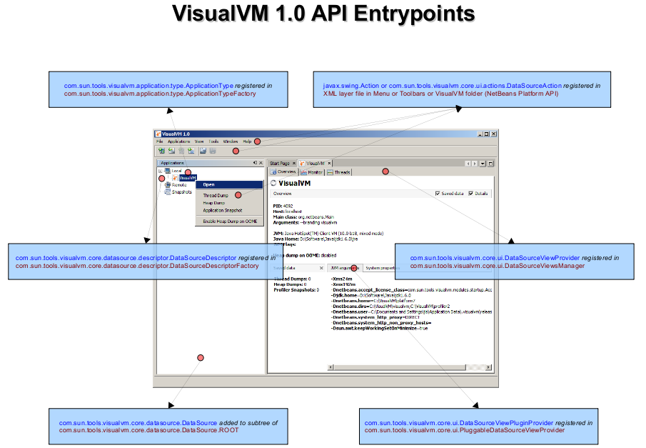
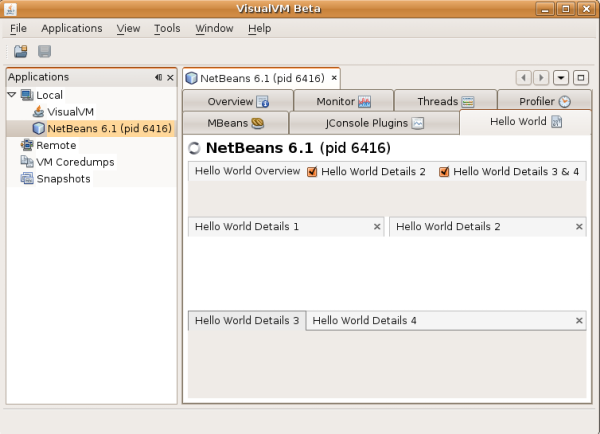
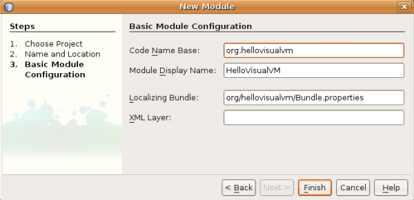
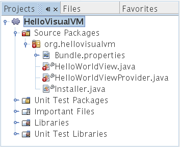
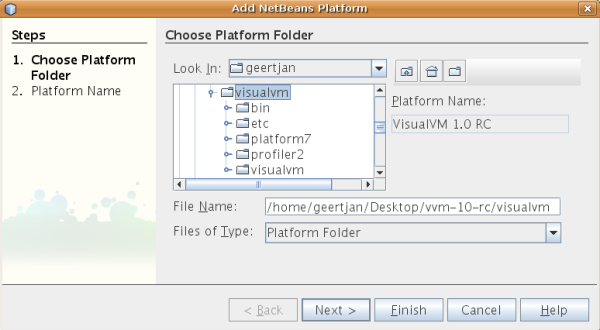

Начало работы с расширением VisualVM
| Загрузка руководства |
VisualVM — инструмент для визуализации источников данных. По умолчанию он визуализирует следующие типы источников данных—приложения, узлы (hosts), снимки, дампы ядра, дампы кучи (Heap Dump) и дампы потоков (Thread Dump). Эти источники данных визуализируются в VisualVM, чтобы их можно было контролировать в целях анализа, управления и устранения неполадок.
В этом руководстве вы познакомитесь с API VisualVM, чтобы добавлять в VisualVM дополнительные возможности. В основном будет показано, как начать их использовать, и даны ссылки на дополнительные ресурсы, такие как шаблоны и образцы.
В целом есть два типа причин, по которым вы можете захотеть расширить VisualVM:
- Ориентация на инструмент. В этом сценарии у вас есть инструмент мониторинга или управления, который вы хотите сделать доступным в VisualVM. Например, у вас может быть инструмент, который показывает потоки приложения или скорость обработки новым интересным способом. В этом случае вы создадите плагин, который сделает ваш инструмент доступным в VisualVM через новые вкладки и пункты меню, чтобы пользователи VisualVM могли воспользоваться набором возможностей вашего инструмента.
- Ориентация на приложение. В этом сценарии у вас есть приложение со специфическими потребностями мониторинга и управления. Например, если ваше приложение — сервер развёртывания, вы можете захотеть дать пользователям графический обзор приложений, развёрнутых на этом сервере. В этом случае нужно представить VisualVM новый тип приложения. По умолчанию все ваши приложения будут обрабатываться одинаково, и если у приложения есть одна или несколько уникальных характеристик и вы хотите, чтобы они поддерживались в VisualVM, вам нужно предоставить плагин для уникального типа приложения таким образом.
Содержание
|
Точки входа VisualVM
Точки входа в VisualVM относятся к следующим категориям:
- Расширение вкладки. По умолчанию VisualVM предоставляет вкладки с подписями вроде «Overview» (Обзор), «Monitor» (Монитор) и «Threads» (Потоки). Вы можете создавать новые вкладки, такие же как эти. При желании ваши вкладки могут быть расширяемыми, чтобы другие могли вставлять в них вложенные вкладки. Ваши вкладки могут быть доступны либо для всех источников данных в VisualVM, либо для конкретных типов источников данных.
- Расширение вложенной вкладки. Внутри вкладок, таких как перечисленные выше, можно предоставлять новые вложенные вкладки. Однако это возможно, только если вкладка определена как «подключаемая» (pluggable), что объясняется ниже. Следующие вкладки являются подключаемыми: «Overview», «Monitor», «Threads», «Heap Dump» и «Host». При создании новой вложенной вкладки можно указать её положение относительно других вложенных вкладок внутри вкладки. Вложенные вкладки могут быть доступны для всех источников данных или для конкретных источников данных.
- Расширение меню. К источнику данных и его подоузлам можно добавить один или несколько пунктов в контекстные меню.
- Расширение типа приложения. По умолчанию все приложения, визуализируемые в VisualVM, обрабатываются одинаково, то есть у них одни и те же значки и вкладки, если только не предоставлен плагин с дополнительной функциональностью. Вы также можете захотеть предоставить функциональность для конкретного приложения, что означает, что нужно определить новый тип приложения. Это можно сделать для чего-то простого, например чтобы предоставить отличительный значок для запущенного экземпляра вашего приложения. Или вы можете предоставить много функциональности, включая графики, чтобы показать обработку вашего конкретного приложения.
- Расширение источника данных. Источник данных «Application» — лишь один из типов источников данных, которые можно контролировать и которыми можно управлять в VisualVM. Другой источник данных — «Host», который позволяет контролировать и управлять локальными и удалёнными узлами. Вы можете захотеть создать новые источники данных, когда нужно контролировать и управлять типом источника данных, который VisualVM по умолчанию не обслуживает.
Наглядное представление точек входа в VisualVM:

Точки входа в VisualVM реализуются через шаблон фабрики. В этом свете основные API VisualVM таковы:
- Вкладки
com.sun.tools.visualvm.core.ui.DataSourceViewProvider
/com.sun.tools.visualvm.core.ui.DataSourceViewЧтобы вкладки можно было расширять, нужно расширить следующий API вместо com.sun.tools.visualvm.core.ui.DataSourceViewProvider:
com.sun.tools.visualvm.core.ui.PluggableDataSourceViewProvider - Вложенные вкладки
com.sun.tools.visualvm.core.ui.DataSourceViewPluginProvider
/com.sun.tools.visualvm.core.ui.DataSourceViewPlugin - Пункты меню
com.sun.tools.visualvm.core.ui.actions.SingleDataSourceAction - Типы приложений
com.sun.tools.visualvm.application.type.MainClassApplicationTypeFactory
/com.sun.tools.visualvm.application.type.ApplicationType - Источники данных
com.sun.tools.visualvm.core.model.AbstractModelProvider
/com.sun.tools.visualvm.core.datasource.descriptor.DataSourceDescriptor
/com.sun.tools.visualvm.core.datasource.DataSource
Жизненный цикл плагина VisualVM определяется классом ModuleInstall, который входит в API NetBeans. Всякий раз, когда вы реализуете новую точку входа в VisualVM, нужно предоставить код регистрации и отмены регистрации реализации точки входа. Соответствующий код инициализации должен быть в классе ModuleInstall. Когда плагин загружается в VisualVM, метод ModuleInstall.restored — первый метод, вызываемый из вашего плагина. Именно этот метод должен инициализировать точки входа. Когда плагин удаляется или когда VisualVM завершает работу, точки входа плагина нужно снять с регистрации из метода ModuleInstall.uninstalled. Типичный код регистрации и отмены регистрации будет показан в следующем сценарии «Hello World».
Подготовка к расширению VisualVM
Планируя расширять VisualVM, нужно сделать следующее:
- Установить JDK 7. Сама VisualVM 1.3.7+ работает на JDK 7, даже если она может контролировать и управлять приложениями, работающими на более ранних версиях JDK. Создаваемые плагины поэтому также должны использовать JDK 7, а не более раннюю версию JDK.
- Установить NetBeans IDE 6.x. Хотя вы можете использовать любой редактор или IDE для разработки плагинов VisualVM, NetBeans IDE оптимизирована для разработки плагинов VisualVM. Например, структуру проекта плагина VisualVM, а также несколько полезных шаблонов может сгенерировать NetBeans IDE. На момент написания аналогичные средства генерации кода для VisualVM другими IDE не поддерживаются.
- Зарегистрировать VisualVM в NetBeans IDE. Вы будете собирать плагины VisualVM относительно VisualVM, чтобы её плагины (и API, предоставляемые этими плагинами) были доступны вашим собственным плагинам. Когда вы поместите двоичный файл VisualVM в NetBeans Platform Manager, вы позволите NetBeans IDE компилировать плагин относительно VisualVM. Тогда API VisualVM будут доступны вашему плагину. В меню Tools (Сервис) выберите NetBeans Platform Manager и укажите корневой каталог установки VisualVM. Нажмите Next (Далее), затем Finish (Готово). Позже, создавая проект плагина VisualVM, вы сможете указать, что плагин должен собираться относительно двоичного файла VisualVM, который вы зарегистрировали выше.
- Получить Javadoc VisualVM. Документацию API для VisualVM 1.3.7 можно найти здесь.
Создание плагина «Hello World»
Теперь скажем «Hello World». Мы создадим новую вкладку, которая выглядит так:

На вкладке не будет данных: мы просто создадим её и добавим заполнители для содержимого.
- В NetBeans IDE выберите File (Файл) > New Project (Новый проект), затем
выберите NetBeans Modules > Module. Нажмите Next (Далее). Создайте новый модуль NetBeans
с именем «HelloVisualVM» и обязательно укажите, что
сборка должна идти относительно двоичного файла VisualVM, который вы зарегистрировали ранее:

Нажмите Next (Далее) и заполните следующий шаг так:

Нажмите Finish (Готово).
- Щёлкните правой кнопкой узел проекта «HelloVisualVM» и выберите New (Создать) > Other (Другое).
В диалоге New File воспользуйтесь мастером «Module Installer», который создаст класс, вызываемый
при установке плагина в VisualVM. Вот где находится мастер
в диалоге New File:

- После завершения мастера реализуйте методы ModuleInstall.restored
и ModuleInstall.uninstalled следующим образом:
@Override public void restored() { HelloWorldViewProvider.initialize(); } @Override public void uninstalled() { HelloWorldViewProvider.unregister(); }Как видите, два метода выше мы определим в классе «HelloWorldViewProvider», который определим позже. Поэтому красные строки ошибок можно игнорировать: методы вы создадите позже.
- Теперь добавьте зависимость от «VisualVM-Core», который предоставляет API VisualVM. Для этого щёлкните правой кнопкой узел проекта, выберите «Properties» (Свойства) и задайте зависимость на вкладке «Libraries» (Библиотеки).
- Создайте класс «HelloWorldViewProvider» следующим образом:
class HelloWorldViewProvider extends DataSourceViewProvider<Application> { private static DataSourceViewProvider<Application> instance = new HelloWorldViewProvider(); @Override public boolean supportsViewFor(Application application) { //Always shown: return true; } @Override public synchronized DataSourceView createView(final Application application) { return new HelloWorldView(application); } static void initialize() { DataSourceViewsManager.sharedInstance().addViewProvider(instance, Application.class); } static void unregister() { DataSourceViewsManager.sharedInstance().removeViewProvider(instance); } }Прочитав Javadoc, который вы загрузили ранее, вы узнаете, для чего нужны два переопределённых метода выше.
- Наконец, создадим класс HelloWorldView, который создаётся нашим провайдером выше:
class HelloWorldView extends DataSourceView { private DataViewComponent dvc; //Reusing an image from the sources: private static final String IMAGE_PATH = "com/sun/tools/visualvm/coredump/resources/coredump.png"; // NOI18N public HelloWorldView(Application application) { super(application, "Hello World", new ImageIcon(Utilities.loadImage(IMAGE_PATH, true)).getImage(), 60, false); } @Override protected DataViewComponent createComponent() { //Data area for master view: JEditorPane generalDataArea = new JEditorPane(); generalDataArea.setBorder(BorderFactory.createEmptyBorder(14, 8, 14, 8)); //Panel, which we'll reuse in all four of our detail views for this sample: JPanel panel = new JPanel(); //Master view: DataViewComponent.MasterView masterView = new DataViewComponent.MasterView ("Hello World Overview", null, generalDataArea); //Configuration of master view: DataViewComponent.MasterViewConfiguration masterConfiguration = new DataViewComponent.MasterViewConfiguration(false); //Add the master view and configuration view to the component: dvc = new DataViewComponent(masterView, masterConfiguration); //Add configuration details to the component, which are the show/hide checkboxes at the top: dvc.configureDetailsArea(new DataViewComponent.DetailsAreaConfiguration( "Hello World Details 1", true), DataViewComponent.TOP_LEFT); dvc.configureDetailsArea(new DataViewComponent.DetailsAreaConfiguration( "Hello World Details 2", true), DataViewComponent.TOP_RIGHT); dvc.configureDetailsArea(new DataViewComponent.DetailsAreaConfiguration( "Hello World Details 3 & 4", true), DataViewComponent.BOTTOM_RIGHT); //Add detail views to the component: dvc.addDetailsView(new DataViewComponent.DetailsView( "Hello World Details 1", null, 10, panel, null), DataViewComponent.TOP_LEFT); dvc.addDetailsView(new DataViewComponent.DetailsView( "Hello World Details 2", null, 10, panel, null), DataViewComponent.TOP_RIGHT); dvc.addDetailsView(new DataViewComponent.DetailsView( "Hello World Details 3", null, 10, panel, null), DataViewComponent.BOTTOM_RIGHT); dvc.addDetailsView(new DataViewComponent.DetailsView( "Hello World Details 4", null, 10, panel, null), DataViewComponent.BOTTOM_RIGHT); return dvc; } } - Щёлкните правой кнопкой узел проекта и выберите «Run» (Запустить).
Это установит плагин в новый экземпляр VisualVM,
и вы увидите новую вкладку для всех типов приложений:
Поздравляем, вы завершили сценарий Hello World!
Устранение неполадок
Если инструкции для образца Hello World, описанные выше, у вас не работают, сделайте следующее:
- Воспользуйтесь ссылкой «Download Sample» (Загрузить образец) вверху этой страницы, чтобы загрузить образец.
- Установите загруженный файл NBM в NetBeans IDE через Tools (Сервис) | Plugins (Плагины) | Downloaded (Загруженные).
- Откройте мастер New Project (Ctrl-Shift-N) и найдите
образец в категории Samples | NetBeans Modules, как
показано здесь:

- Завершите мастер и, если вы не задали VisualVM как
платформу NetBeans, вы увидите проект вместе с
значками ошибок, как показано здесь:

- Выберите Tools (Сервис) | NetBeans Platforms, нажмите Add Platform (Добавить платформу) и укажите каталог
установки VisualVM, чтобы зарегистрировать её:

Нажмите Next (Далее), затем Finish (Готово).
- Щёлкните правой кнопкой узел проекта «HelloVisualVM» в окне Projects и выберите Properties (Свойства). На панели Libraries выберите VisualVM как платформу NetBeans. Когда вы закроете диалог Project Properties, пометки об ошибках должны исчезнуть.
- Запустите проект: результат должен совпасть с последним шагом предыдущего раздела.
Теперь просмотрите исходный код образца и сравните его со своим, чтобы найти проблему.
Приложение A: шаблоны файлов VisualVM
NetBeans Plugin Portal предоставляет мастеры, которые могут быть полезны при начале расширения VisualVM:
- VisualVM View Template. Даёт классы Java, нужные для создания новой вкладки для указанного источника данных, вместе с применимыми зависимостями проекта.
- VisualVM Application Type Template. Даёт классы Java, нужные VisualVM, чтобы распознать новое приложение Java по его главному классу, чтобы был создан новый узел с уникальным отображаемым именем и значком для указанного приложения, вместе с применимыми зависимостями проекта.
- VisualVM Action Template. Даёт класс Java, записи layer.xml и зависимости проекта для нового пункта меню в обозревателе для указанного источника данных.
В каждом случае страница Plugin Portal описывает шаги при использовании шаблона и также показывает большую часть кода, который генерируется для вас.
Приложение B: образцы API VisualVM
NetBeans Plugin Portal предоставляет коллекцию из 7 образцов, охватывающих наиболее распространённые способы подключения к VisualVM:

Перейдите сюда, чтобы получить образцы, которые описаны здесь на Javalobby.
Приложение C: справочник API VisualVM
Когда вы получите исходный код VisualVM, вы обнаружите, что приложение составляют следующие модули. Каждый предоставляет набор API, которыми можно расширять соответствующий модуль:

Краткий обзор пакетов, связанных с API, предоставляемых
модулями VisualVM, которые вы видите выше, вместе
с вопросами FAQ, которые могут возникнуть по концепциям,
относящимся к соответствующим пакетам:
| Пакет | Описание | Связанные FAQ |
|---|---|---|
| com.sun.tools.visualvm.core.datasource | Предоставляет классы, представляющие DataSources. DataSource может быть Application, Host, CoreDump, SnapShot или пользовательским DataSource, внесённым сторонним плагином. | |
| com.sun.tools.visualvm.core.datasupport | Предоставляет слушатели и интерфейсы для поддержки источников данных. | |
| com.sun.tools.visualvm.application.views.monitor | Предоставляет точку входа во вкладку «Monitor». | |
| com.sun.tools.visualvm.application.views.overview | Предоставляет точку входа во вкладку «Overview». | |
| com.sun.tools.visualvm.application.views.threads | Предоставляет точку входа во вкладку «Threads». | |
| com.sun.tools.visualvm.core.explorer | Предоставляет точки входа в представление обозревателя. Например, можно создавать новые пункты меню на узле в обозревателе, слушать изменения и указывать, что должно происходить при развёртывании или свёртывании узла. | |
| com.sun.tools.visualvm.heapdump | Предоставляет точку входа во вкладку «Heap Dump». | |
| com.sun.tools.visualvm.core.model | Предоставляет классы, определяющие базовую модель новых DataSources. Например, эти классы используются для синхронизации. | |
| com.sun.tools.visualvm.application.type | Предоставляет предопределённые универсальные типы приложений. Например, тип приложения предоставляется для приложений Java Web Start, так что когда приложение развёртывается через Java Web Start, в VisualVM показывается отличительный текст, чтобы легко идентифицировать развёрнутое приложение. Есть также тип приложения по умолчанию, чтобы все приложения так или иначе распознавались. | |
| com.sun.tools.visualvm.core.datasource.descriptor | Предоставляет классы, которые нужно использовать при создании новых источников данных, таких как новые типы приложений. | |
| com.sun.tools.visualvm.host | Предоставляет общий интерфейс для DataSources, представляющих узел, то есть localhost или удалённый узел. | |
| com.sun.tools.visualvm.jmx | Предоставляет классы для работы с Java Management Extensions (JMX). Например, можно проверить, включён ли JMX для приложения, и затем включить или отключить функциональность, предоставляемую плагином. | |
| com.sun.tools.visualvm.jvm | Предоставляет классы, позволяющие определять функциональность для конкретных версий JVM. Например, есть класс «SunJVM_6» и класс «SunJVM_7». Для каждого класса можно проверить, включены ли возможности, такие как мониторинг JVM, и затем включить или отключить функциональность, предоставляемую плагином. | |
| com.sun.tools.visualvm.core.scheduler | Предоставляет службы планировщика. Например, предоставляет службу планировщика на основе интервалов, которую можно использовать для выполнения задач через заданные интервалы. | |
| com.sun.tools.visualvm.application.snapshot | Предоставляет точки входа в снимки. Например, можно получить список зарегистрированных снимков. | |
| com.sun.tools.visualvm.threaddump | Предоставляет точку входа во вкладку «Thread Dump». | |
| com.sun.tools.visualvm.core.ui | Предоставляет точки входа, позволяющие создавать новые вкладки и вложенные вкладки. Например, помимо создания вкладок и вложенных вкладок можно определить, где они должны отображаться относительно существующих вкладок и вложенных вкладок, и определить, являются ли они подключаемыми. | |
| com.sun.tools.visualvm.core.ui.components | Предоставляет компоненты, которые можно использовать для определения вкладок и вложенных вкладок. Например, каждая вкладка делится на главную область и четыре области сведений, у каждой из которых могут быть области конфигурации для показа и скрытия. |
Приложение D: дополнительное чтение
Чтобы продолжить изучение API VisualVM, рекомендуется обратиться к следующим ресурсам:
- Получить Javadoc VisualVM. Документацию API для VisualVM 1.3.7 можно найти здесь.
- FAQ разработчика VisualVM. Полный список типичных вопросов по API VisualVM вместе со многими образцами кода, которые на них отвечают.
- Исходный код VisualVM. Если вы читаете исходный код VisualVM, вы сможете ответить на несколько вопросов по реализации API. Например, в исходном коде можно найти несколько подключаемых представлений, на которых можно учиться при создании собственных подключаемых представлений.
- Плагины VisualVM. Когда вы загружаете исходный код VisualVM,
вы также загружаете исходный код
набора плагинов. Их можно изучать и учиться
на них. Относитесь к ним как к образцам. На момент написания с исходным кодом поставляются
следующие плагины:
- GlassFish. Этот плагин предоставляет новый тип приложения для сервера GlassFish. Для каждого запущенного экземпляра GlassFish создаётся узел нового типа приложения. Все развёрнутые приложения представлены подоузлами, с дальнейшими подоузлами для каждого сервлета в приложении. Кроме того, предоставляются вкладки, специфичные для каждого экземпляра сервера, приложения и сервлета.
- MBeans. Этот плагин предоставляет новую вкладку для всех приложений с включённым JMX. Сведения на вкладке точно такие же, как на вкладке MBeans в приложении JConsole из JDK.
- JConsole. Этот плагин делает VisualVM восприимчивым к плагинам JConsole, так что вложения в плагины JConsole не теряются при переходе с JConsole на VisualVM.
- Записи в блоге Гертьяна Виленги (Geertjan Wielenga). Гертьян —
технический писатель, отвечающий за документирование API VisualVM.
Изучая API VisualVM, он написал серию записей в блоге
об API VisualVM, которые изучал.
Примечание: с момента написания этих записей несколько API изменились, но они хотя бы дают представление о том, что входит в каждый описанный сценарий.
Соответствующие записи в блоге:
- Getting Started Extending VisualVM (Part 1). Здесь вы создаёте первое расширение вкладки. Вы узнаёте, что вкладки VisualVM делятся на главные представления, конфигурации главных представлений и представления сведений. Эта запись воспроизведена в разделе «Hello World» данного руководства.
- Getting Started Extending VisualVM (Part 2). Здесь вы создаёте расширение типа приложения с расширением вложенной вкладки внутри вкладки Overview и расширением меню, оба специально для типа приложения.
- Getting Started Extending VisualVM (Part 3). Здесь вы знакомитесь с подоузлами типа приложения и направляетесь к плагину GlassFish за соответствующим исходным кодом.
- Getting Started Extending VisualVM (Part 4). Здесь подчёркивается расширяемость вкладок «Overview», «Monitor» и «Threads». Кроме того, показано, как сделать собственные вкладки расширяемыми.
- Getting Started Extending VisualVM (Part 5). Здесь обсуждается расширяемость источника данных «Host». Приведён код для добавления вкладки в представление Localhost и вложенной вкладки на его вкладку Overview.
- Getting Started Extending VisualVM (Part 6). Здесь вы многое узнаёте о главных акторах VisualVM—источниках данных. Кроме того, показан весь код, нужный для создания собственного источника данных.
- Getting Started Extending VisualVM (Part 7). Здесь вы узнаёте, как создать вкладку для сравнения данных из нескольких экземпляров одного типа источника данных. В этом случае вкладка содержит системные свойства (или аргументы JVM) всех запущенных приложений Java одновременно.